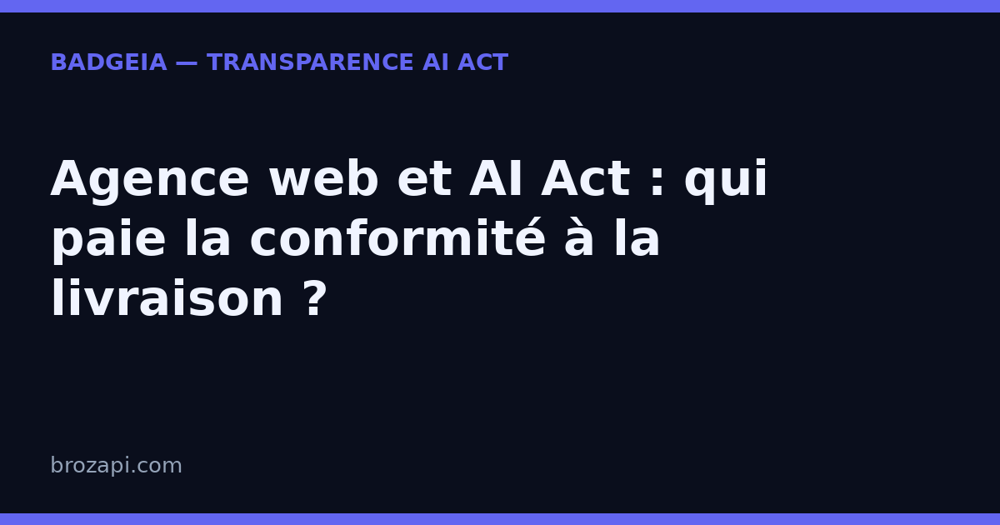

Agence web et AI Act : qui paie la conformité à la livraison ?

Publié le 21 août 2026 · Lecture : 6 minutes
Votre agence livre un site avec un chatbot en bas à droite, des textes générés par IA ou des visuels créés automatiquement. Dès la mise en ligne, l’article 50 de l’AI Act s’applique. Il oblige à informer clairement l’utilisateur qu’il interagit avec une intelligence artificielle, et à signaler les contenus générés ou manipulés par IA.
Cette obligation ne concerne pas seulement les éditeurs de logiciels. Elle touche aussi chaque site web, chaque page, chaque chat qui intègre ces fonctions. Pour une agence, la question n’est pas de savoir si elle doit agir, mais qui fait quoi, et comment le facturer.
La mise en ligne déclenche l’obligation
L’article 50 entre en jeu dès qu’un service d’IA est mis à la disposition du public. Dans votre livrable, cela correspond à plusieurs cas concrets :
- un chatbot ou un assistant conversationnel installé sur le site ;
- des blocs de texte, titres ou descriptions de produits générés par IA ;
- des images, icônes ou visuels produits automatiquement et publiés sans retouche explicite ;
- toute autre fonction qui donne l’impression d’une interaction humaine ou d’un contenu réel sans l’être.
Le déclencheur n’est pas le contrat, c’est la mise en service. Autrement dit, le jour où le site passe en production, l’agence et le client doivent pouvoir montrer que les utilisateurs sont avertis.
Qui est responsable : l’agence ou le client ?
L’AI Act vise le déployeur, c’est-à-dire celui qui met le service d’IA en service. Sur un site livré par une agence, cette notion est floue. Le client est propriétaire du site, de son nom de domaine et de l’usage commercial. L’agence a configuré l’outil, choisi le fournisseur d’IA et intégré le module.
En pratique, la responsabilité se partage. L’agence maîtrise la technique ; le client maîtrise le contenu diffusé. Si un chatbot est mal signalé parce que l’agence n’a pas prévu la mention, le problème vient de la livraison. Si le client supprime la mention après la livraison, la responsabilité se déplace.
La solution passe par deux gestes simples : documenter ce qui est livré, et prévoir au contrat qui assure la mise à jour des signalements. Ne laissez pas cette question en suspens. Un site sans trace écrite de la configuration IA est un site exposé.
Ce qu’il faut intégrer à chaque livraison
Traitez la conformité comme une fonctionnalité du site, pas comme un ajout juridique. Voici le minimum à livrer :
- Une mention IA dès le premier contact. Le chatbot doit afficher, avant ou au moment de la première interaction, qu’il s’agit d’un assistant automatique. Une mention en petit lien en bas de fenêtre ne suffit pas si l’utilisateur ne la voit pas.
- Des étiquettes sur les contenus générés. Chaque bloc de texte, chaque image ou chaque fiche produit créée par IA doit être identifiable dans la maquette et dans le back-office. Le client doit comprendre, en un coup d’œil, ce qu’il peut publier tel quel et ce qu’il doit vérifier.
- Un dossier de livraison documenté. Remettez au client une note qui liste les services d’IA utilisés, les fournisseurs, les pages concernées et les emplacements des mentions de transparence. Ce document protège les deux parties.
- Une procédure de mise à jour. Prévoyez comment le client signalera les futurs contenus générés après votre départ. Sinon, la conformité s’érodera en quelques semaines.
- Une courte formation ou notice. Quinze minutes suffisent à expliquer au client pourquoi il ne doit pas retirer les mentions. C’est le meilleur investissement pour éviter un retour en arrière.
Refacturer la conformité : un poste de valeur
La conformité à l’AI Act prend du temps. Elle mérite d’apparaître dans le devis. Proposez-la comme une ligne spécifique : « mise en conformité article 50 AI Act » ou « pack transparence IA ». Cela inclut l’intégration des mentions, la documentation, la recette et la transmission au client.
Vous avez deux options. La première : l’intégrer systématiquement dans toute livraison qui utilise l’IA. Avantage, vous ne livrez jamais de site non conforme. La deuxième : la proposer en option. Cela peut attirer des clients à budget serré, mais vous devez refuser de retirer les mentions obligatoires. Même gratuites, elles doivent rester visibles.
Ne faites pas de cette conformité un coût caché. Un client qui découvre une surprise à la fin du projet perd confiance. Un client qui comprend dès le devis que vous sécurisez son site en règle voit un argument commercial : il achète la tranquillité, pas seulement un site.
Mini-FAQ
Mon agence doit-elle signaler chaque contenu IA, ou seulement le chatbot ?
L’article 50 couvre à la fois les interactions avec une IA et les contenus générés ou manipulés par IA. Si votre livrable contient des textes, images ou fiches produits automatiques, chacun doit en pratique être signalé — l’obligation est la plus stricte pour les contenus réalistes (deepfakes) — ou au moins identifiable dans la maquette et le CMS. Pour les cas limites, vérifiez le texte officiel du règlement.
Le client peut-il supprimer les mentions après la livraison ?
Techniquement oui, s’il a la main sur le back-office. C’est pourquoi vous devez documenter la livraison et prévoir une clause qui précise que toute suppression des mentions relève de sa responsabilité. La formation initiale limite aussi ce risque.
L’agence qui héberge le site est-elle automatiquement déployeur ?
Non. L’hébergement technique n’est pas le déploiement au sens de l’AI Act. La responsabilité dépend de l’usage effectif du service d’IA et de qui contrôle la configuration. Si vous hébergez et maintenez le site, votre rôle est plus important, mais c’est le contrat et la documentation qui fixent la répartition.
Pour vérifier votre propre site : lancez un scan gratuit BadgeIA — il détecte en 2 minutes si votre chatbot ou vos contenus IA sont correctement signalés.
Cet article est fourni à titre informatif et ne constitue pas un conseil juridique. Pour une analyse de votre situation, consultez un professionnel du droit.
← Tous les guides · AI Act art. 50 : le guide complet · La checklist de conformité PME · Où afficher la mention : 5 emplacements concrets